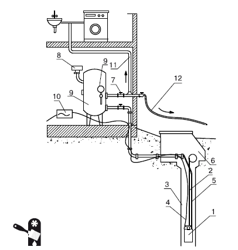

Внутренний водопровод.

Внутренний водопровод предназначен для обслуживания основных сантехнических узлов в доме. Это система, включающая в себя водомерные и разводящие узлы, стояки, вводы в дом (обычно имеются два ввода), подводки к санитарным устройствам (краны, сливные бачки и т. д.), различные насосные установки, если в них есть необходимость.
В зависимости от расположения магистральных трубопроводов, водопроводы бывают с нижней и верхней разводкой. Тип внутреннего водопровода следует выбирать с учетом условий подачи и расхода воды, размещения водоподающих установок (Рис. 1.33).
При нижней разводке трубы помещают в подвальном помещении здания. Если дом имеет два и более этажа, санитарно-технические устройства и соответствующая водоразборная арматура обычно размещаются строго друг над другом (при этом прокладка трубопроводов идет по кратчайшей траектории). Но в частном загородном доме кратчайшая траектория не является обязательным условием, ведь санитарно-технические устройства на разных этажах могут быть различными (например, на первом этаже располагаются кухня, туалет, ванная комната с душевой кабиной и ванной, а на втором – ванная комната только с душевой кабиной и туалет, причем эти помещения примыкают к спальной комнате). Так что кратчайшую траекторию приходится рассчитывать, исходя из пожеланий в размещении устройств и водоразборной арматуры.

Рис. 1.33.Водоснабжение загородного дома от скважины: 1 – погружной насос для подъема воды из скважины; 2 – стальной трос; 3 – скважина; 4 – электрический кабель; 5 – водопроводный шланг; 6 – приямок; 7 – запорный вентиль; 8 – реле давления; 9 – манометр; 10 – напорный гидробак; 11 – трубы внутреннего водопровода; 12 – вывод воды для использования на участке
Системы водоснабжения различаются в зависимости от требуемого напора:
? система под напором – не рекомендуется к применению, если в наружном водопроводе нет гарантии наличия стабильного напора (например, в случае подключения загородного дома к централизованной системе водоснабжения, которая работает не слишком стабильно) – чтобы система под напором работала, напор наружного водопровода должен либо превышать тот напор, который необходим для работы всех водоразборных точек в доме, либо равняться ему; к плюсам такой системы относится ее простота, обычно она используется в малоэтажном строительстве (до 5–6 этажей);
? система с водонапорным баком – считается устаревшей и применяется все реже, обычно ее используют, если напор в точках водоразбора нестабилен и превышает нужный при небольшом водопотреблении, а при активном – его не хватает; основной недостаток системы с водонапорным баком – наличие бака, который устанавливается под крышей дома, что требует соответствующего усиления перекрытий, а в некоторых случаях и фундамента;
? повысительные насосные установки – используются в случае, если водопотребление является равномерным, а напор в наружном водопроводе недостаточен (подобное обычно относится к случаю подключения к централизованной системе водоснабжения); плюсом такой системы является то, что для нее не требуется ни усиливать перекрытия, ни перестраивать фундамент, установка располагается в подвале и не занимает много места;
? водонапорный бак с повысительной насосной установкой – повысительная насосная установка дополняется водонапорным баком в том случае, если водопотребление неравномерно и требуется накопление воды в баке-аккумуляторе для обеспечения нормального напора в час пик;
? водонасосная (пневматическая) система с повысительными насосными установками – применяется в многоэтажном строительстве, оборудование является и дорогим, и сложным, для индивидуальных загородных домов нерентабельно.